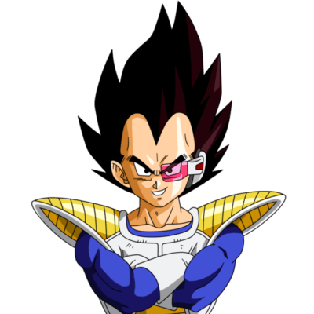
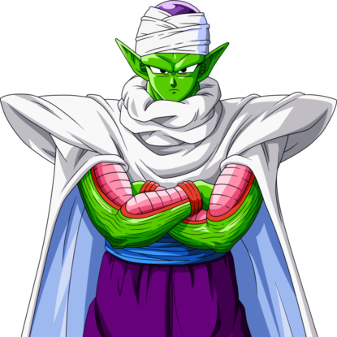

Son Gokū es el protagonista de la serie de manga y anime Dragon Ball. Fue creado por Akira Toriyama en 1984. Al comienzo de la historia, Gokū aparece como un niño que practica las artes marciales y que posee una cola de mono y una fuerza sobrehumana, pero más adelante se revela que es un extraterrestre de la raza ficticia saiyajin, y que su nombre original es Kakarotto.
Vegeta

Vegeta, cuyo nombre completo es Príncipe Vegeta IV, es un personaje de ficción creado por Akira Toriyama. Apareció por primera vez en el capítulo #204 de Dragon Ball, publicado el 7 de noviembre de 1988. Es el hijo del Rey Vegeta y el heredero del trono del planeta Vegeta, hogar de la raza guerrera conocida como los Saiyajin. Vegeta es conocido por su arrogancia, orgullo y su deseo de ser el luchador más fuerte del universo, lo que lo lleva a obsesionarse con superar a Goku, su rival principal.
Picoro

Piccolo o Piccolo Jr., también conocido bajo el seudónimo de Ma Junior, es uno de los personajes principales que aparece en el manga y anime de Dragon Ball y sus correspondientes secuelas.
Gohan
Son Gohan es un personaje ficticio de la serie de manga Dragon Ball, creada por Akira Toriyama. Gohan es presentado como el primer hijo del protagonista Goku y su esposa Chi-Chi
Dragon ball
Dragon Ball (ドラゴンボール Doragon Bōru?, tdl. «Bola de dragón») es un manga escrito e ilustrado por Akira Toriyama. Fue publicado originalmente en la revista Shōnen Jump, de la editorial japonesa Shūeisha, entre 1984 y 1995.[1][2] Su trama describe las aventuras de Gokū, un guerrero saiyajin, experto en artes marciales que en su infancia inicia sus viajes y aventuras en las que pone a prueba y mejora sus habilidades de pelea, enfrentando oponentes y protegiendo a la Tierra de otros seres que quieren conquistarla y exterminar a la humanidad. Conforme transcurre la trama, conoce a otros personajes que le ayudan en este propósito. El nombre de la serie proviene de unas esferas mágicas que al ser reunidas invocan a un dragón que concede deseos. En varias ocasiones resultan útiles tanto para Gokū y sus amigos como para la humanidad, aunque también son procuradas de forma constante por algunos seres malignos.